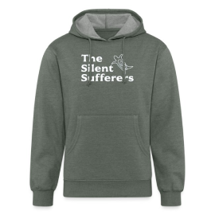
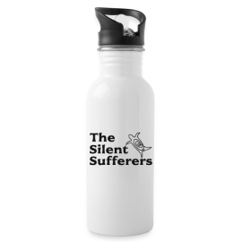

The Silent Sufferers: Save the Sea Turtles
Merch
Visit our Spreadshop page The Silent Sufferes: Save the Sea Turtles where you will find beautifully designed products whose proceed will go to Sea Turtle Recovery, a non-profit organization that is based out of New Jersey. STR gives a voice to endangered sea turtles. They help educate others on the importance of sea turtles. Their main mission is to rehabilitate sick or injured sea turtles so that they can be put back into the wild.
Here Are Some of Are Products

Unisex Organic Hoodie

Men's T-Shirt

Women's T-Shirt

Bucket Hat
Tote Bag

Water Bottle
Sticker
Face Mask